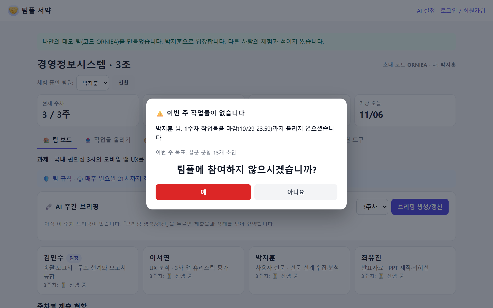
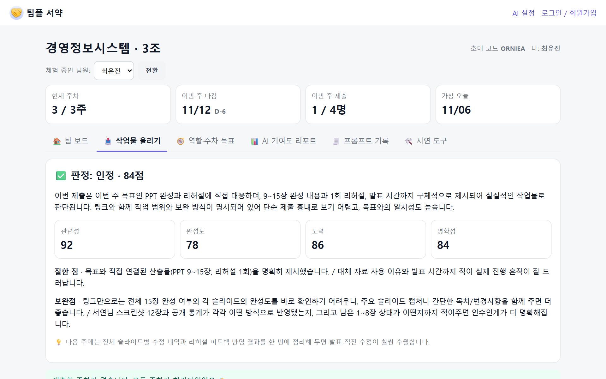

| 지금 | 팀플 서약 이후 | |
|---|---|---|
| 성실한 팀원 | 말할 증거가 없음 | 매주 판정 기록 + AI 기여도 리포트로 증명 |
| 미제출 팀원 | 미뤄도 아무 일 없음 | 그 순간 참여 여부를 직접 선택 · 하루 연장으로 만회 기회 |
| 팀장 | 독촉·취합을 혼자 | AI 역할 설계 · 주간 브리핑·단톡 공지문이 대신 |
| 교수님 | 학기 말 설문에 의존 | 주차별 제출·판정 기록과 리포트로 개별 평가 근거 확보 |
• 학점은 교수님이 최종 결정 — 서약서는 성적을 자동으로 바꾸지 않는 '자기 신고 기록'
• 수업 첫 주 교수님 동의 하에 도입, 반영 방식은 강의계획서에 명시
• 판정 기록·서명은 이의 제기 시 근거 자료
• 강요가 아닌 선택: 미제출 시 하루 연장 기회가 먼저
• 서약 전 두 번 확인 + 팀장이 되돌릴 수 있음 (질병·사정 고려)
• 팀 밖에는 공개되지 않음 (팀원·교수만 열람)
• 문구 순화: '학점 포기' → '참여 포기 확인서' 선택 가능
• 교수용 설정: 서약 기능 켜기/끄기, 반영 비율 지정
• 이의 제기·재참여 절차, 개인정보 보관 기간(학기 종료 후 삭제)
• AI 판정은 참고용 — 최종 판단은 사람이
LMS 연동 · 깃허브/노션 자동 증빙 · 기업 OJT·TF 프로젝트 · 교내 GPU(틸론)로 학생 데이터 교내 처리
✔ 누구나 접속 가능한 배포 사이트
✔ AI 5단계: 역할 설계 · 유사도 검사 · 검토 · 판정 · 주간 브리핑 · 기여도 리포트
✔ 이메일 로그인 · 계정과 팀원 1:1 연결(대리 제출 차단)
✔ 데이터 영구 저장 · 자필 서명 서약서
✔ AI 장애 시에도 규칙 기반으로 끝까지 작동
teamfair-ai.vercel.app → 「아니요, 참여할게요」 → 「데모 팀 생성하고 입장」